This example was inspired by a discussion with Paul Constantine [1].
Let the ODE boundary-value problem
$$ (a(x,s)u')' = 1,\qquad u(0) = u(1) = 0, $$
be given, where
$$ a(x,s) = 1+4s(x^2-x) $$
and the prime denotes differentiation with respect to $x$. The exact solution can be shown to be
$$ u(x,s) = {1\over 8s} \log(1+4s(x^2-x)) = {1\over 8s} \log(a(x,s)) . $$
It is clear that for $s=1$, the solution has a singularity at $x=1/2$. Here, we explore what happens when we solve the problem for values of $s$ getting closer and closer to the critical value $s=1$.
Setting up the problem
We begin by rewriting the differential equation in the form
$$ a(x,s)u'' + a'(x,s)u' = 1, $$
as it will be simpler to work with. We now set up anonymous functions to represent $a$ and $a'$,
a = @(x,s) 1 + 4*s*(x.^2-x); ap = @(x,s) 4*s*(2*x-1);
as well as anonymous functions for the exact solution and the chebfun $x$ on the interval [0,1]:
uexact = @(x,s) log(a(x,s)) / (8*s);
chebx = chebfun('x',[0 1]);
We can now set up a chebop to represent the boundary-value problem operator. However, since we want to explore what the solution looks like for different values of $s$, we define the chebop as an anonymous function as well (whose output will be a chebop). The two last arguments correspond to imposing homogeneous Dirichlet conditions on the solution.
Ns = @(s) chebop(@(x,u) a(x,s).*diff(u,2) + ap(x,s).*diff(u),[0 1], 0, 0);
Since we want to take values of $s$ closer and closer to $1$, we rewrite $s$ in the form
$$ s = 1-10^{-\gamma}, $$
where $\gamma$ takes integer values (giving $s=0.9,0.99,0.999,\dots$). We thus define $s$ as an anonymous function
s = @(gamma) 1-10^(-gamma);
We can then obtain the solution of the problem for different values of $\gamma$. Again, we use anonymous functions to achieve the desired effect.
ugamma = @(gamma) solvebvp(Ns(s(gamma)),1);
Here, the solvebvp method is another way to call the chebop backslash method. The second argument corresponds to the right-hand side of the differential equation.
Solutions for different values of $\gamma$
We're now all set to solve the problem for different values of $\gamma$.
res = []; error = [];
LW = 'linewidth'; FS = 'fontsize';
ax = [0 1 -2.2 0.2];
for gamma = 1:3
solgamma = ugamma(gamma);
plot(solgamma,LW,1.6)
ss = sprintf('gamma = %1d length(solution) = %4d',gamma,length(solgamma));
title(ss,FS,12), axis(ax), grid on, snapnow
res(gamma) = norm(feval(Ns(s(gamma)),solgamma)-1);
error(gamma) = norm(solgamma - uexact(chebx,s(gamma)));
end
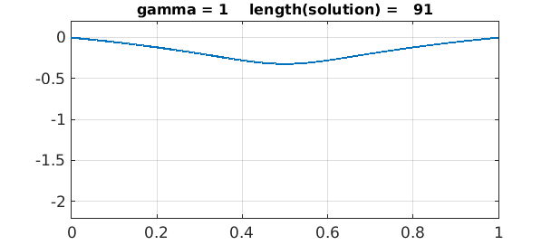
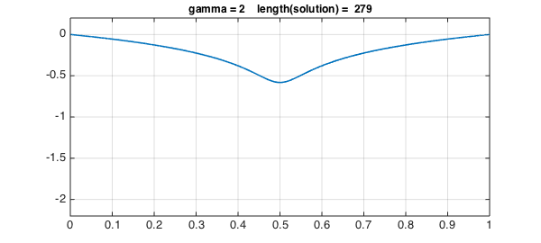
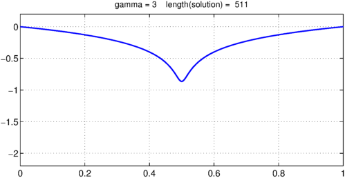
Here we are required to use the feval method to evaluate the residual since MATLAB doesn't allowing double indexing, i.e. we can't call Ns(s(gamma))(solgamma).
Values of $\gamma$ up to 3 work fine, but the lenghts of the solutions are increasing.
Looking at the entries in the vector storing the values of the residual reveals that they grow extremely fast with $\gamma$.
semilogy(1:3,res,'-*m',LW,1.6), grid on
title('Norm of residual',FS,12), xlabel('\gamma',FS,12)
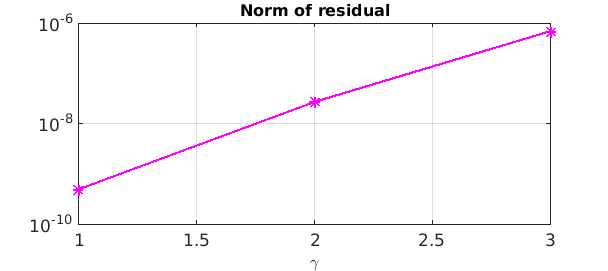
However, the error remains much better under control:
semilogy(1:3,error,'-*r',LW,1.6), grid on
title('Norm of error',FS,12), xlabel('\gamma',FS,12)
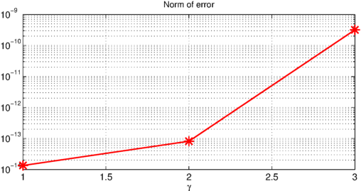
Introducing a breakpoint
The plot above of the solutions for different values of $\gamma$ reveals that the solution gets more and more difficult to represent close to $x= 1/2$ as $\gamma$ increases (i.e., $s$ gets closer to $1$). This makes a good case for introducing a breakpoint in the solution at $x=1/2$, so rather than the solution being represented by a global chebfun, it is represented by two pieces.
We introduce a breakpoint in the operator as follows (notice the second argument to the chebop constructor):
Nsbreak = @(s) chebop(@(x,u) a(x,s).*diff(u,2)+ap(x,s).*diff(u),[0 .5 1],0,0);
We now redefine the anonymous function which gives the solution.
ugammabreak = @(gamma) solvebvp(Nsbreak(s(gamma)),1);
We're now all set to solve the problem using breakpoints for different values of $\gamma$. Here, values of $\gamma$ up to 6 work with the default chebop settings.
chebx = chebfun('x',[0 0.5 1]);
res = []; error = []; legs = [];
for gamma = 1:7
solgamma = ugammabreak(gamma);
plot(solgamma,LW,1.6)
ss = sprintf('gamma = %1d length(solution) = %4d',gamma,length(solgamma));
title(ss,FS,12), axis(ax), grid on, snapnow
res(gamma) = norm(feval(Nsbreak(s(gamma)),solgamma)-1);
error(gamma) = norm(solgamma - uexact(chebx,s(gamma)));
end
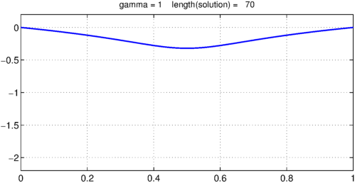
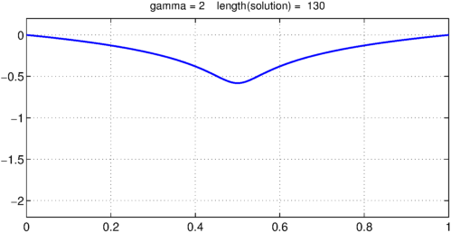
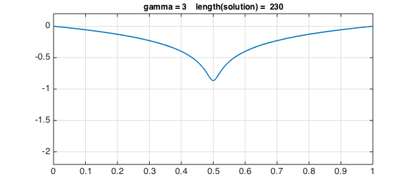
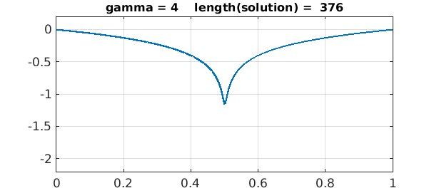

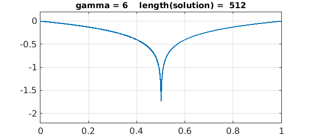
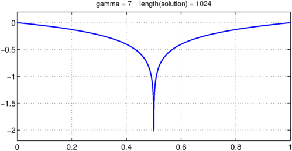
Again, the errors are quite satisfactory.
semilogy(1:7,error,'-*r',LW,1.6), grid on
title('Norm of error',FS,12), xlabel('\gamma',FS,12)
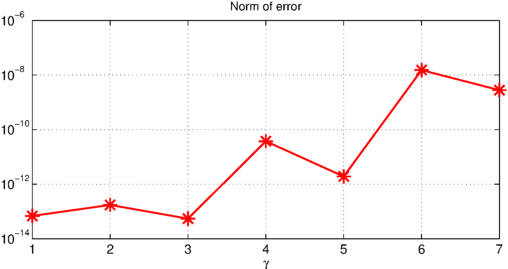
References
- Paul Constantine's website: http://inside.mines.edu/~pconstan/